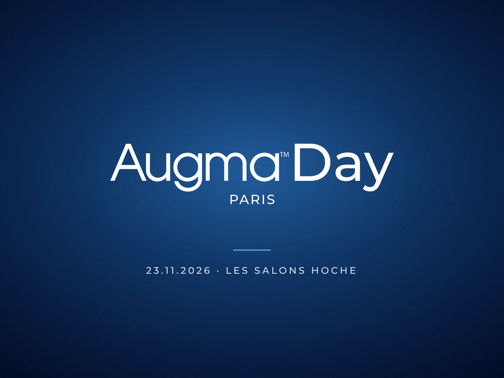
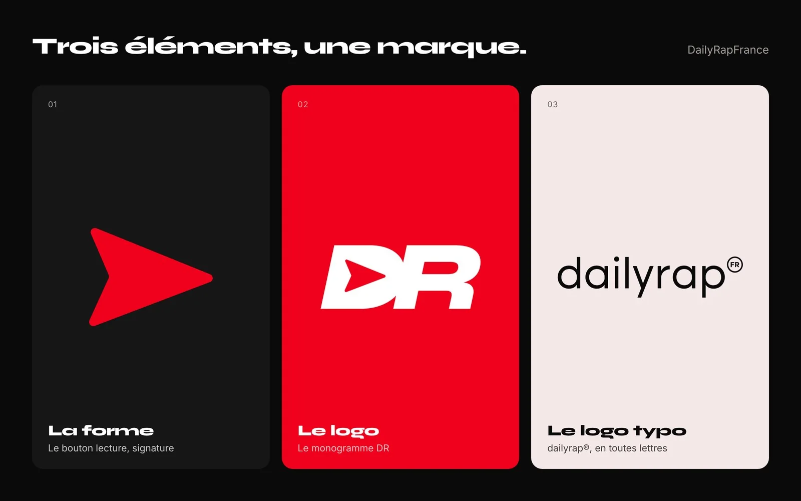
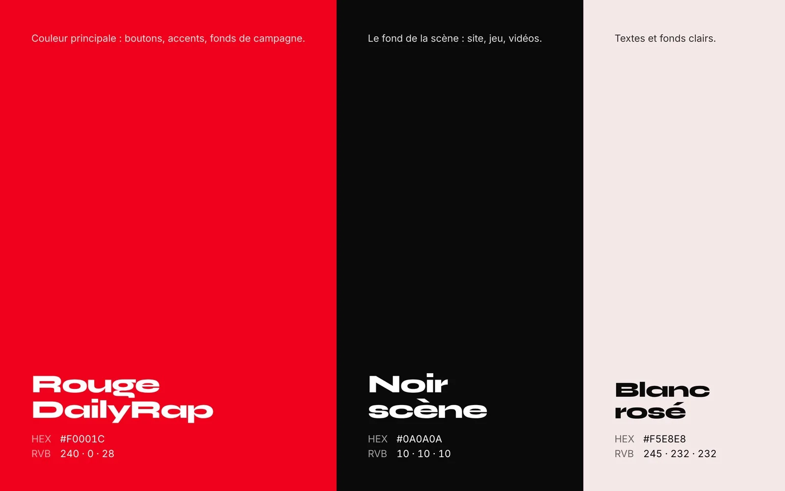

Qu'est-ce qui vous amène ?
Graphiste et directeur artistique, Paris
Je conçois des identités visuelles et des covers. Pour des artistes du rap français, des indépendants à BADARA et Sadek, et pour des marques et des startups.

Une sélection de projets récents. Chacun s'ouvre sur le contexte, mes choix et le travail en grand.
Rien dans cette catégorie pour l'instant.




 Mon propre projet, depuis avril 2020
Mon propre projet, depuis avril 2020
DailyRapFrance, c'est ma preuve grandeur nature. En avril 2020, sans agence ni prestataire, je crée tout moi-même : le nom, le logo, l'identité visuelle, la direction artistique des contenus, puis le site et son blind test. Une marque claire, reconnaissable au premier coup d'œil, c'est ce qui a permis au projet de grandir : près de 170 000 abonnés aujourd'hui, et une vraie place auprès des artistes, des rappeurs et des labels.


La forme, le logo, le logo typo et la palette : l'identité que j'ai créée pour DailyRapFrance.
Musique
Des artistes indépendants qui construisent leur univers, et des artistes installés comme BADARA ou Sadek. Covers, affiches, visuels de promo : je pense l'image d'une sortie de A à Z.


Teasers, capsules et formats courts pour les sorties de BADARA. Tournés, montés et pensés pour les réseaux.
Agence, grand groupe, label, e-commerce, freelance. Le détail est dans le CV.
Indépendant, Paris. Branding, UI/UX et direction artistique pour des marques, des startups et des artistes de la scène rap française.
oofti.fr, Montreuil. Identité visuelle, communication digitale et print pour un site e-commerce.
DailyRapFrance, Neuilly-Plaisance. Ligne éditoriale, identité visuelle, création de contenu et montage vidéo.
Instincts Productions, Paris
SIM Consulting, Bry-sur-Marne
TotalEnergies, La Défense
Publicis Groupe, Paris
Pacific Colour, Bonneuil-sur-Marne
MJM Graphic Design, Mention Très Bien
Claude Nicolas Ledoux, Mention Bien
Pour des artistes, des marques et des startups.
Covers d'albums et de singles, affiches de concert, visuels de promo, et l'univers d'un projet entier. Pour des artistes du rap français, des indépendants qui se lancent comme des artistes installés, comme BADARA ou Sadek.
Logo, charte, et tout ce qui en découle : papeterie, packaging, réseaux sociaux. Je livre des fichiers propres et un guide d'utilisation, pour que la marque reste cohérente après mon passage.
Landing pages, sites et applications, maquettés dans Figma et pensés pour être développés. Beaucoup de projets dans la santé et le dentaire ces derniers mois.
Montage, motion design et photographie, pour la communication de marque et les réseaux.
Un projet en tête ? Le premier appel est gratuit, et dure 20 minutes.
Je suis graphiste et directeur artistique, à Paris. Mon métier, c'est de concevoir des identités visuelles : donner à un artiste ou à une marque une image qui lui ressemble, et qui tient dans le temps.
La musique est au cœur de mon travail. J'accompagne des artistes du rap français, des indépendants en développement qui construisent leur univers comme des artistes bien installés, comme BADARA ou Sadek : covers, affiches, visuels de promo, direction artistique d'un projet entier. En avril 2020, j'ai aussi lancé DailyRapFrance, mon propre média sur le rap français : près de 170 000 abonnés sur TikTok, Instagram et YouTube, et un blind test joué en ligne et en soirée. C'est lui qui m'a fait connaître dans le milieu, et qui me fait vivre cette scène de l'intérieur.
À côté, je conçois des identités et des sites pour des marques et des startups.
Florian B.
Florian B. est graphiste et directeur artistique à Paris. Il conçoit des identités visuelles, et travaille surtout dans la musique : il accompagne des artistes du rap français, aussi bien des indépendants en développement que des artistes installés comme BADARA et Sadek. Il a fondé DailyRapFrance, un média consacré au rap français, et conçoit aussi des identités et des sites pour des marques et des startups.
Florian B. a conçu plusieurs covers de BADARA, l'un des artistes de Nouvelle École sur Netflix : « Chaque fois », « Kanan », « Compète », « Esprit », « Fuis », « Mini Moi », « Pression », « Mirador », « Vidal », ainsi que l'affiche de son passage au Splendid, à Lille.
Il travaille avec des artistes du rap français : BADARA, Sadek, Benef, et des artistes indépendants en développement qui construisent leur univers visuel.
DailyRapFrance est le média rap que Florian B. a lancé en avril 2020, pendant le confinement, pour partager les sorties et les artistes qu'il découvrait. C'est son propre projet : devenu un média indépendant suivi par près de 170 000 abonnés sur TikTok, Instagram et YouTube, connu des artistes, des labels et des acteurs du rap français, il propose aujourd'hui un blind test rap français gratuit, en ligne et sans inscription : en solo, entre amis sur un seul téléphone, en salon en ligne avec un code, ou en soirée avec la télé comme écran, ainsi qu'un mode « Devine le clip » façon Reels. On y joue sur dailyrapfrance.best.
Tout part de l'écoute du morceau ou du projet et d'un échange avec l'artiste. Viennent ensuite les références, une ou deux pistes, les ajustements, puis la livraison au format des plateformes de streaming, avec les déclinaisons pour la promo : stories, bannières, affiches.
Oui. Au-delà de la cover, il conçoit l'identité d'un projet entier : logo ou typographie d'artiste, visuels de promo, affiches de concert et direction artistique d'ensemble.
Oui. Il conçoit des identités visuelles et des sites pour des marques et des startups, notamment oofti.fr, Augmantor, Evidentall, Safe Academy et le restaurant Chez Mario, pour lequel il a aussi réalisé les photos culinaires, et a travaillé sur des projets pour BNP Paribas et Courtepaille.
Par e-mail à contact@florian-b.fr, sur Instagram (@florian.b93tsz), ou en réservant un appel directement depuis florian-b.fr.
Un poste, une mission, une sortie qui arrive ? Écrivez-moi ou prenez un créneau, je réponds moi-même.
Identité visuelle, restauration
Identité visuelle complète pour la chaîne de restaurants Courtepaille : de la façade au menu, en passant par le merchandising et l'ambiance intérieure.
Une enseigne de restauration connue de tous, dont l'image devait retrouver de la chaleur et de la cohérence entre la salle, la carte et la vente à emporter.
Moderniser sans basculer dans les codes du fast-food : garder l'esprit bistrot et « vrai repas » qui fait la différence face aux concurrents.
Un rouge profond, le bois comme fil conducteur et une grille unique appliquée à tous les supports, de l'enseigne aux tenues du personnel.
Le projet en images


Un rouge plus vif aurait rapproché Courtepaille des codes du fast-food. Ce ton plus profond, plus proche du bordeaux, garde l'appétence sans perdre le positionnement bistrot : c'est un restaurant, pas un drive.
Sur les tables, les menus, les visuels, le bois revient comme un fil conducteur. C'est un repère tactile et sensoriel qui rappelle « vrai repas » face à des concurrents plus synthétiques dans leur image.
Menu papier, appli, écran en salle : la structure visuelle ne change jamais, seul le contenu change. Le client reconnaît la marque en une fraction de seconde, sur n'importe quel support.
Direction artistique, rap français
Direction artistique et conception de covers d'albums et de singles pour des artistes de la scène rap française, dont plusieurs créations pour BADARA, actuellement dans l'émission Nouvelle École sur Netflix.
Pour un artiste, la cover est souvent le premier contact avec le public : une vignette de quelques centimètres sur une plateforme de streaming.
Traduire l'univers d'un morceau en une image forte, lisible en tout petit, et qui reste cohérente d'une sortie à l'autre.
Un travail sur la typographie, la retouche et parfois la 3D ou l'IA, décliné ensuite en visuels promo pour les réseaux et les plateformes.
Les covers


Affiche de concert

BADARA en invité du concert de MIG x Kerchak au Splendid, à Lille. Format vertical pour Instagram et la billetterie : typographie chromée et halo bleu-violet repris de l'univers de l'artiste.
Identité et site, santé
Identité visuelle et site d'Augmantor, le cercle des mentors cliniques de Safe Coaching (Dental Groupe) : des chirurgiens-dentistes expérimentés ouvrent leur cabinet à un confrère, le temps d'une intervention.
Augmantor réunit des praticiens référents prêts à transmettre leur savoir-faire en conditions réelles, au cabinet, sans devenir formateurs à plein temps.
Donner envie à des chirurgiens expérimentés et très sollicités de candidater, tout en rassurant sur le cadre : le patient, le cabinet et la confidentialité.
Une identité affirmée (l'hexagone et sa flèche montante, un dégradé rouge-orange, un brun profond) déclinée des réseaux sociaux à la signature e-mail, et un site qui mène droit à la candidature.
L'identité visuelle


Le site


Identité et interface, logiciel dentaire
Landing page et portail d'Evidentall, une plateforme qui connecte tout le dentaire : gestion du cabinet, dossiers patients, plans de traitement, relation avec les prothésistes et les laboratoires, offres des fournisseurs.
Dans un cabinet dentaire, l'information est éparpillée : agenda papier, tableurs, e-mails, appels au laboratoire, catalogues fournisseurs, logiciels séparés. Evidentall réunit tout dans un même écosystème.
Présenter un produit riche (quatre espaces, plus de quinze fonctionnalités, de l'IA, des données de santé) à des publics très différents, sans noyer personne et en inspirant confiance.
Une page qui oriente d'abord chacun vers son espace, montre le produit en situation (tableau de bord, plan de traitement, demandes, parcours patient) et rassure sur l'hébergement HDS et sur le rôle de l'IA, qui assiste sans décider.
Le projet en images


L'identité visuelle


Version mobile : les deux portes d'entrée (créer un compte, accéder à son espace santé) restent visibles dès le premier écran.
Branding, supports imprimés et landing page, événement scientifique
Landing page de l'Augma™ Day 2026, une journée de conférences sur la régénération osseuse pour les chirurgiens-dentistes, organisée par Safe Implant (Dental Groupe) aux Salons Hoche à Paris, en avant-première du congrès ADF.
Un événement scientifique d'une journée : 7 conférenciers internationaux, un programme dense, deux formules d'inscription et plusieurs solutions de financement (FIF PL, OPCO, Qualiopi).
Transformer une page riche en informations en page d'inscription : donner envie, rassurer un public médical exigeant et convertir avant la clôture des places.
Un hero qui dit tout en un coup d'œil (date, lieu, prix, places), des formules comparables côte à côte, un programme en frise matin et après-midi avec chaque intervenant, un comparatif clinique et une FAQ pour lever les derniers doutes.
L'identité visuelle
Les supports imprimés
Le badge remis à chaque participant, à porter autour du cou : l'affiche de l'événement en format A6, et un grand cadre blanc pour le prénom et le nom.
La landing page


Version mobile : l'essentiel (date, lieu, compte à rebours, prix) et le bouton de réservation tiennent dans le premier écran.
Identité et landing page, formation
Landing page de Safe Academy, le centre de formation de Safe Implant pour les chirurgiens-dentistes : greffe osseuse, soulevé de sinus minimalement invasif et dentisterie numérique, avec des sessions à Paris et au Maroc.
Plusieurs formations d'une journée, plusieurs villes, trois formateurs, des programmes techniques et des modalités de financement différentes selon le statut du praticien.
Aider un dentiste à trouver la bonne session en quelques secondes, puis lui donner assez de confiance (formateurs, programme, avis) pour s'inscrire.
Des fiches de session avec date, lieu, formateurs et prix au même endroit, des programmes en onglets, les parcours des formateurs, des témoignages vidéo et une section financement claire.
L'identité visuelle


La landing page


Version mobile : le titre, la promesse et le bouton d'inscription restent lisibles dès l'arrivée.
Identité visuelle, banque
Modernisation de l'identité BNP Paribas avec une approche contemporaine et dynamique, de la construction du logo jusqu'à ses applications du quotidien.
Une marque bancaire installée, présente aussi bien en agence que dans la poche de ses clients via l'application.
Faire évoluer l'identité vers plus de modernité sans perdre la confiance et la reconnaissance attachées au logo.
Un logo reconstruit sur une grille précise, puis testé sur les supports les plus exigeants : la carte, l'écran mobile et l'enseigne.
Le projet en images


Identité visuelle, e-commerce
Création de l'identité complète de la plateforme e-commerce oofti.fr.
Une boutique en ligne qui avait besoin d'une image plus forte et plus cohérente sur l'ensemble de ses points de contact.
Rendre la marque immédiatement reconnaissable, aussi bien sur le site mobile que dans un fil Instagram.
Une refonte du logo (avant / après), puis un système décliné sur les cartes de visite, l'interface mobile et les formats réseaux.
La charte graphique


Les déclinaisons


Identité visuelle, fitness
Identité sportive et énergique pour la chaîne de salles de sport BasicFit.
Une enseigne grand public, visible dans de nombreuses villes, qui s'adresse à un public large et varié.
Exprimer l'énergie et l'effort tout en restant simple, lisible et accessible à tous les profils.
Un logo repensé (avant / après), une typographie dédiée et des visuels qui assument le mouvement, testés en enseigne.
Le projet en images


Packaging
Design d'emballage premium avec une structure innovante, du gabarit technique jusqu'à l'expérience d'ouverture.
Un produit du quotidien, choisi en quelques secondes en rayon, à côté de dizaines de concurrents.
Se démarquer en linéaire et offrir une expérience plus premium, sans compliquer la fabrication.
Une nouvelle structure de pack pensée dès le plan de découpe, avec un travail sur les faces, le dos informatif et l'ouverture.
Le projet en images


Campagne, affichage urbain
Campagne de communication urbaine multiformat, de l'abribus à l'affichage métro.
Une campagne pensée pour la rue, là où le passant n'accorde que quelques secondes à une affiche.
Un message qui se lit de loin et en mouvement, et qui reste identique d'un format à l'autre.
Un visuel clé simple et contrasté, ensuite adapté à chaque format d'affichage sans perdre sa force.
Le projet en images


Mon projet, Média et blind test rap, depuis avril 2020
Mon projet à moi, pas celui d'un client. Lancé seul depuis ma chambre pendant le confinement d'avril 2020, DailyRapFrance est devenu un média suivi par près de 170 000 personnes, connu des artistes, des labels et des acteurs du rap français. Et aujourd'hui, un blind test rap gratuit, joué en solo, entre potes et en soirée.
Avril 2020, tout le monde est enfermé. J'ouvre un simple compte pour partager les sorties et les artistes que je découvre au fil de mes écoutes. Sans aucune prétention, et sans imaginer une seconde travailler un jour avec des artistes.
Une communauté se construit, jusqu'à près de 170 000 abonnés. Le compte devient un média avec sa ligne éditoriale, être là dès le premier chapitre des artistes, et un nom connu des rappeurs, des labels et des acteurs du milieu.
J'ai voulu aller plus loin : un blind test rap français gratuit, à jouer partout. Seul dans le métro, entre potes sur un téléphone, à distance avec un code, en soirée avec la télé comme écran, ou en « Devine le clip » façon Reels. Et le site continue de grandir : les sons du moment, un blind test à créer avec ses propres morceaux, un parrainage, et une app bientôt sur les stores.
L'identité visuelle


Le site aujourd'hui
Sur téléphone, le site se comporte comme une app : une barre en bas, et le gros bouton Jouer toujours sous le pouce.
La forme du logo, un bouton lecture aux angles vifs, dit tout de suite « musique » et « vidéo ». Elle se lit même en tout petit, et elle devient le fil rouge de la marque : icône, fonds, boutons du jeu, transitions.
Un rouge vif sur un noir profond, comme une scène éclairée. Il fait reconnaître le média dans un fil Instagram en une fraction de seconde, et il donne au jeu une énergie de soirée.
Rien à installer : on ouvre le site, on montre un code, tout le monde joue depuis son téléphone. Un compte se crée en dix secondes pour garder ses scores. C'est ce qui permet de lancer une partie en une minute.
C'est ce travail au long cours, au plus près de la scène, qui m'a rapproché des artistes eux-mêmes, jusqu'à concevoir leurs covers et leur univers visuel.
Série personnelle
Une sélection de photographies personnelles : rue, portrait, lifestyle. Le même regard que dans mon travail de direction artistique, sans brief.
La série


Vos données, votre choix.
J'aimerais mesurer l'audience du site pour savoir quels projets vous intéressent. C'est tout, et c'est vous qui décidez. Refuser ne change rien à votre navigation. Politique de confidentialité
Mémorise uniquement le choix que vous faites ici, pour ne pas vous reposer la question à chaque page.
Google Analytics et mon propre outil de statistiques : nombre de visites, pages consultées, provenance. Aucune publicité, aucune revente.